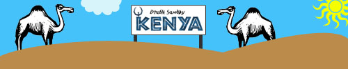

Kenyan dubbelmacka on Sunday?

Then how does reppie +  razor sound to you? To me it sounds like pwnage!
razor sound to you? To me it sounds like pwnage!
Molgrum has started another tournament in the Kenya series called Double Sunday Kenya. This time it’s 2on2 on the menu and just like I told you, one of the best 2on2 teams ever has already signed up.
* The division system from KTK/FTK is adapted in DSK as well. Basically there are two divisions, one for experienced players (oldies) and one for new players (rookies).
* Each group game is 10 minutes, the teams face each other two times. After that, the finals are held in each division.
* Whatever team gets the most frags in the final wins.
* Schedule with timetable will come up before the tournament starts and will show exactly when you’re supposed to play.
The Kenyan map pool of this week’s DSK is dm5a and vdm3v3. There are two features introduced in this tournament which haven’t been used before in terms of tournaments:
Airstep
Allows you to jump up stairs… which means that Reppie’s pace around the map will now be equal to the speed of light!
Jawnmode
Enables fallbunny, fairpacks and some other stuff.
Double Sunday Kenya will take place on September 9th from 20:00 - 22:00 CET (MGT-1) and will be open for bets at Goldrush. For more information about rules, teams and signups take a look at the DSK forum thread.
No reason not to sign up.
A tournament with kenya maps and two divisions where the fun of playing is more important than anything else. Even reppie and razor of Firing Squad has joined. Shouldn't you?